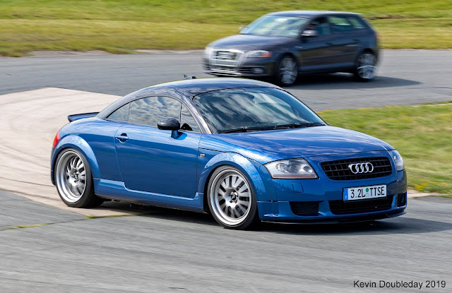

Bio AUDI TT 3.2
It was in 1995 that the world first set eyes on the initial concept car for the Mk1 Audi TT. The covers lifted on the Coupe concept at the Frankfurt Motor Show of that year, but it wouldn't be long until a road-going production car became the dream of many sports car enthusiasts,Bidding to give the car the best chances at becoming a legendary sports car, Audi decided to release a brand new range-topping model in 2003. Its name was the 3.2 V6 Quattro, and as the name suggests, its engine bay was rather full of a massive 3.2-liter V6. A lot of development would go into this model with the aim of ensuring the TT's performance credentials, but did it work? Here's all you need to know about the Mk1 Audi TT 3.2 V6 Quattro.
Engine stats,250 Hp @ 6300 rpm. 320 Nm @ 2800-3200 rpm. 236.02 lb.-ft. @ 2800-3200 rpm
Manufacturer Audi AG
Production 1999-2021

Bio Golf 5 R32
After the IV R32 set the tone for where the brand was going, Volkswagen launched the Golf V R32 in 2005 which became the most powerful and fastest production Golf at the time. The Volkswagen Golf V R32 is based on the standard Golf, meaning its design and dimensions are near identical. However, its new nose design and lowered suspension mean there are small differences such as a 20 mm height reduction and length increase of 42 mm. The next second edition R32 followed the successful formula laid down by the previous R32 and in doing so, established itself at the top of the Golf range, above the already highly acclaimed GTI.
Engine stats,250 Hp @ 6300 rpm. 320 Nm @ 2800-3200 rpm. 236.02 lb.-ft. @ 2800-3200 rpm
Manufacturer Volkswagen AG
Production 2005
Bio Golf IV R32
The Volkswagen Golf IV R32 was launched in 2002. It was the first generation of the Golf R, and it featured a powerful 3.2-liter VR6 engine, all-wheel drive, and a dual-clutch gearbox (DSG) option
Engine stats
Engine: 3.2-liter VR6 engine
Transmission: 6-speed manual or optional 6-speed DSG
Drive: 4MOTION all-wheel drive
Technology: Included the world's first dual-clutch gearbox (DSG)
Performance: A top speed of just under 250 km/h
{kind=link}
{kind=link}